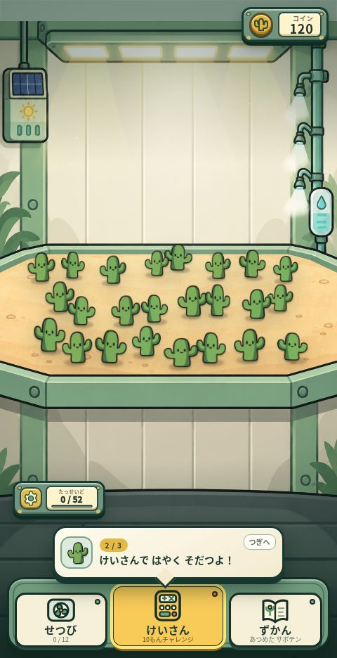
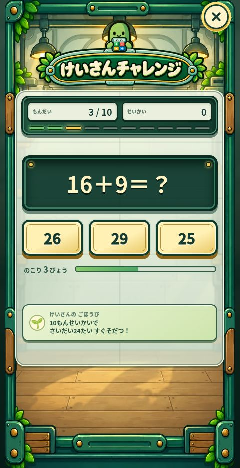

さんすうけいさん
サボテン工場
けいさんしながら、サボテンを そだてよう。
そだてて、しゅうかくして、ずかんに あつめる。
けいさんに チャレンジすると、サボテンが はやく そだつよ。
- たし・ひき・かけ・わり
- そだてて あつめる
- むりょう


どんなことを まなべる？
10もんの けいさんチャレンジ
たしざん・ひきざんから はじめて、こうはんは かけざん・わりざんに チャレンジ！
ごほうびで はやく そだつ
けいさんの せいかいに あわせて、サボテンが せいちょう。しゅうかくして、ずかんに あつめよう。
あそびかた
そだてて、しゅうかく
そだった サボテンを タップ。なぞって まとめて しゅうかくすることも できるよ。
けいさんに チャレンジ
「けいさん」から 10もんに ちょうせん。3つの こたえから えらぼう。
ずかんに あつめる
あつめた サボテンを ずかんで みよう。コインで せつびも つよくできるよ。
ゲームの がめん


公開版の実際の画面（2026年10月6日撮影）。更新により表示が変わることがあります。
保護者の方へ：学習内容と対象
サボテン工場は、育成・収集を楽しみながら計算を練習できるゲームです。10問の計算チャレンジでは、たし算・ひき算・かけ算・わり算を3択で答えます。正解数に応じてサボテンの成長が進み、収穫や収集につながります。
| 学べる項目 | 算数：たし算・ひき算・かけ算・わり算。式を見て答えを3つの選択肢から選びます。 |
|---|---|
| 問題の順番 | 1〜5問目はたし算・ひき算、6〜8問目はかけ算、9〜10問目はわり算です。 |
| 対象の目安 | 四則計算を練習したい小学生向け。計算チャレンジは学年別ではなく、かけ算・わり算も出題されます。まだ習っていない場合は、保護者と一緒に遊んでください。 |
| 遊びの仕組み | 放置育成・収穫・サボテンの収集・設備の強化。計算の正解が成長のごほうびになります。 |
| 記録の保存 | 収集・進行状況は遊んでいるブラウザに保存されます。別の端末や別のブラウザとは自動共有されません。 |
よくある しつもん
むりょうで あそべる？
無料で遊べます。スマートフォン・タブレット・パソコンのブラウザから、インストールせずに始められます。
けいさんが まだ むずかしくても あそべる？
サボテンの育成・収穫・収集も楽しめます。計算チャレンジの後半にはかけ算・わり算が出るため、まだ習っていない場合は保護者と一緒に取り組んでください。
とじても きろくは のこる？
収集・進行状況は、遊んでいるブラウザに保存されます。再開するときは同じ端末・同じブラウザで開いてください。ブラウザのサイトデータを消すと、記録も消えることがあります。
けいさんを すると なにが おきる？
10問の正解数に応じて、サボテンの成長が進みます。計算の練習と、育成・収穫の楽しみがつながっています。
個人情報やアクセス解析については、プライバシー方針をご確認ください。
サボテン工場で あそんでみよう。
漢字クエストの しょうかいも みる →